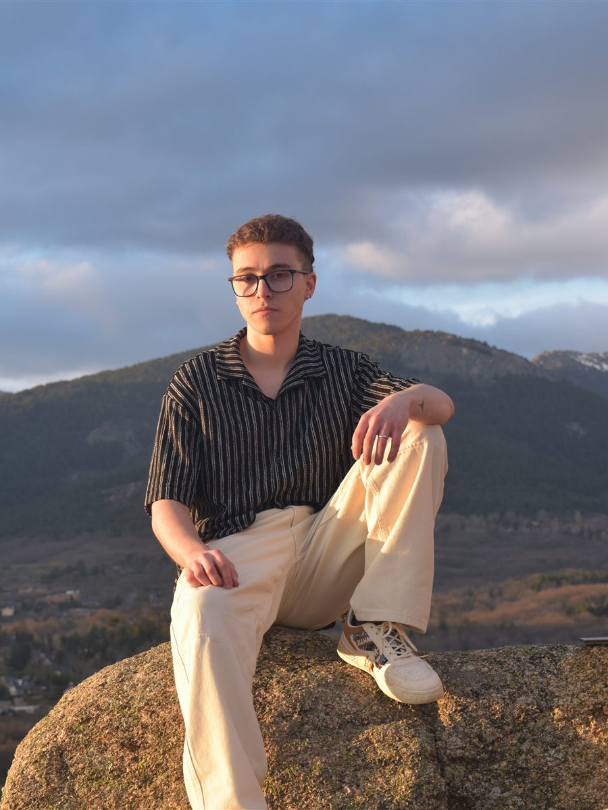

Proyecto artístico
Darkyo
Jorge Aguilera, cofundador de Looped
Produce desde el instinto y la curiosidad, moviéndose entre lo melódico y lo enérgico sin perder una mezcla contundente. El foco está en el detalle emocional, puliendo la sensación hasta que la producción suena exactamente como se siente.
EDMMelodicBass House